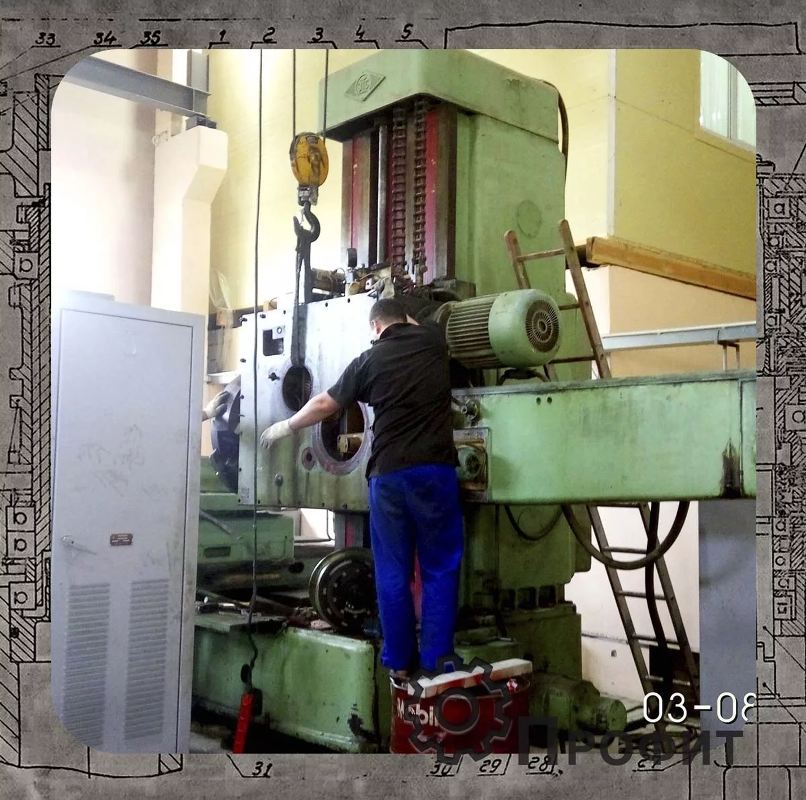
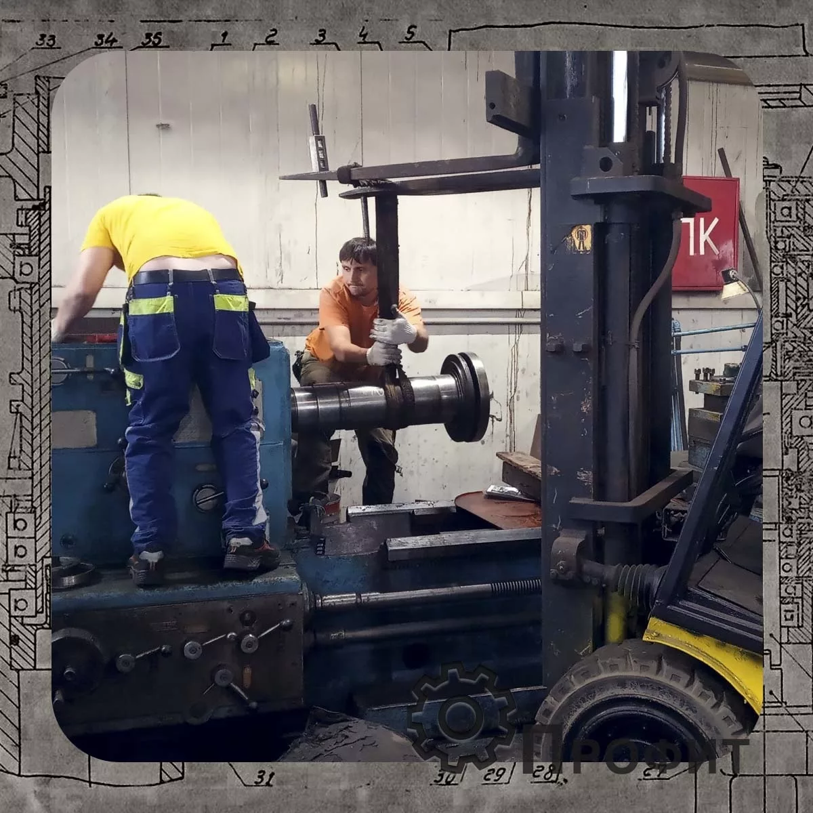
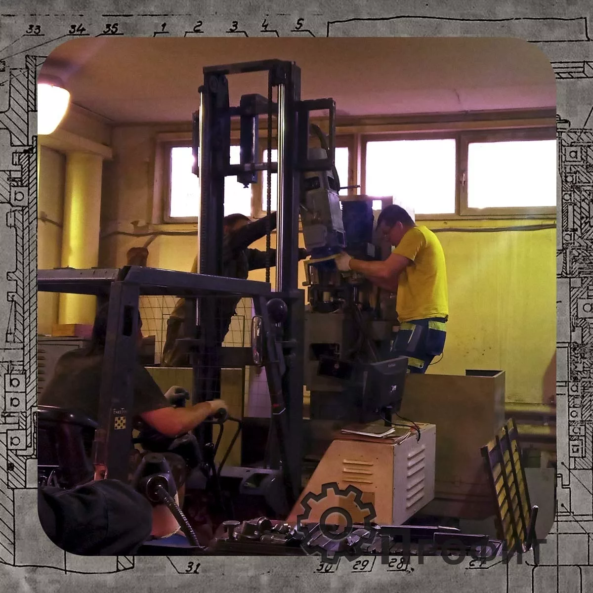
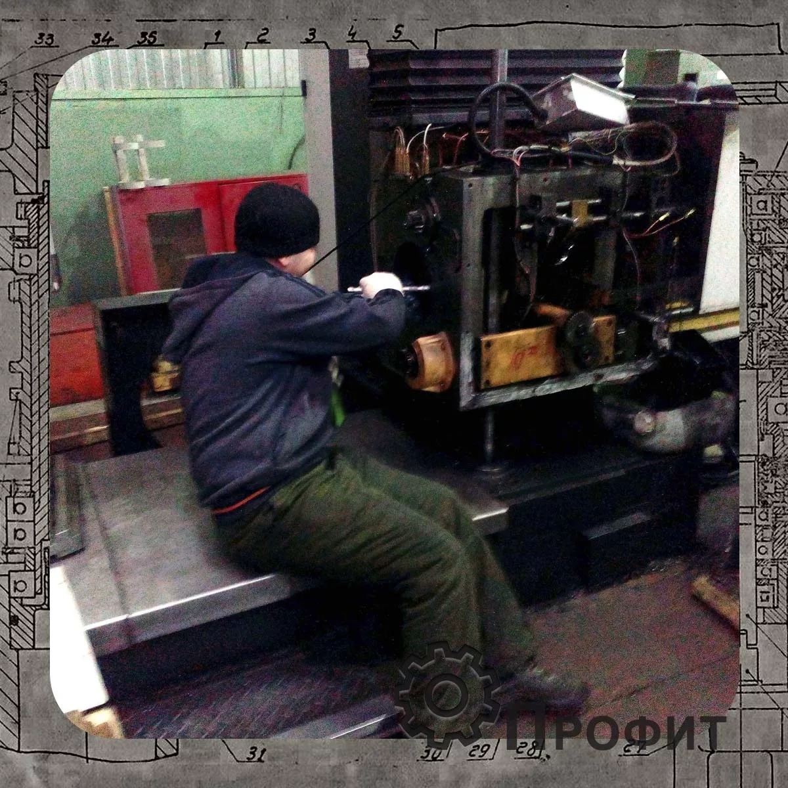

Уже более двенадцати лет мы осуществляем качественный ремонт станков в Москве и Московской области. Сотрудники нашей организации имеют профильное образование для проведение полного комплекса услуг по ремонту промышленного оборудования. Выполнение работ с гарантией один год с возможностью продления. Также производиться техническое сопровождение оборудования, предоставление компетентной консультации (Возможен онлайн формат). Оказание дополнительных услуг в организации прямых поставок запчастей без посредников.


В процессе эксплуатации промышленного оборудования, независимо от нагрузки на них изменяются физико-механические и геометрические параметры узлов и агрегатов. Одновременно снижаются качество и время на изготовку продукции в целом. И наступает момент, когда дальнейшая эксплуатация невозможна или не рентабельна.
Для того чтобы отсрочить или избежать чрезмерно быстрое старение и износа оборудования проводиться три вида ремонта:
Виды ремонта станков:
| Название | Продолжительность | Стоимость | Примечания |
|---|
| Текущий ремонт | Неделя | 5 000 | представляет собой наименьший по объему вид планового ремонта, выполняемый для обеспечения или восстановления работоспособности агрегата. Он заключается в частичной разборке машины, замене или восстановлении отдельных ее узлов и деталей, ремонте несменяемых деталей. |
| Средний ремонт | 2 недели | 10000 | отличается от текущего большим объемом работ и числом изношенных деталей, подлежащих замене. |
| Капитальный ремонт | Месяц | 15000 | полное или близкое к полному восстановление ресурса агрегата с заменой (восстановлением) любых его частей, включая базовые. |


.png)